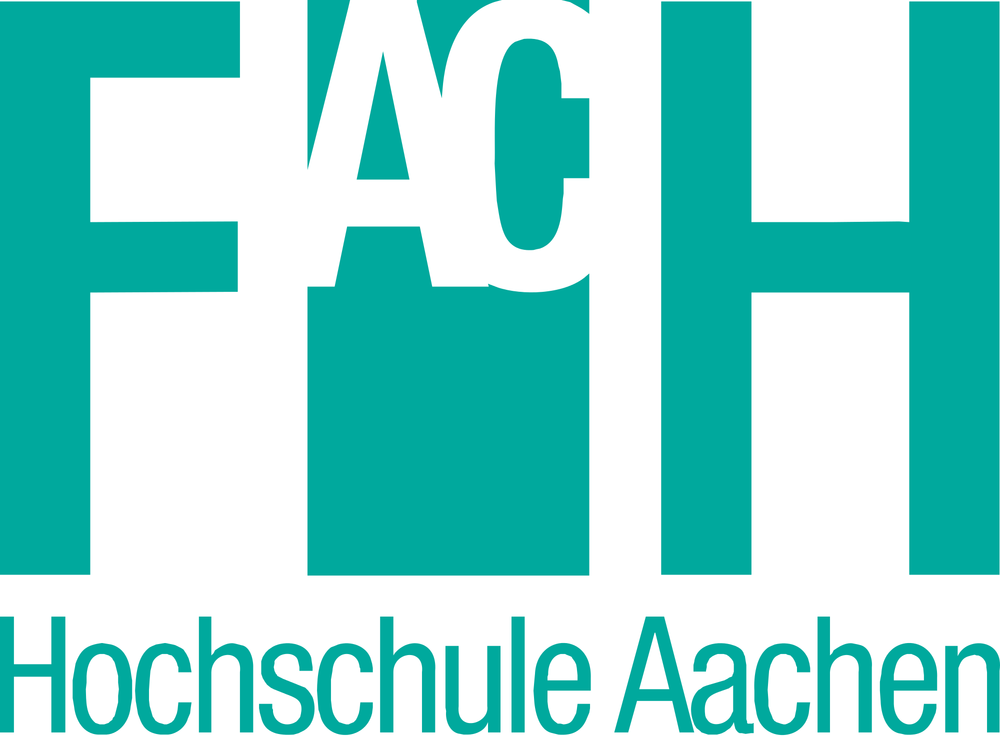

About Me

Education

Columbia University, New York
M.S. in Data Science (2016 - 17)
- GPA: 4.0/4.0
- Relevant courses: Machine Learning, Applied Machine Learning, Probability, Statistical Inference and Modeling, Exploratory Data Analysis and Visualization, Computer Systems for Data Science, Algorithms for Data Science, Storytelling with Data
PEC University of Technology, Chandigarh
B.E. in Computer Science & Engineering (2011-15)
- GPA: 9.4/10
- Relevant courses: Artificial Intelligence, Neural Networks, Database Management Systems(H), Design and Analysis of Algorithms (H), Data Structures, Operating Systems (H), Web Technologies, Software Engineering, Object Oriented Programming (H)
- Recipient of DASA and SPDC scholarships
Work Experience
The Hartford, CT
Data Science Intern (May 2017 - Aug 2017)
- Developed an unconstrained loss model to improve personal auto Class Plans using H2O/Python; improved AUC score by 8%
- Designed a step-up model using gradient boosting to predict probability of step-up election by variable annuity policyholders, achieved an AUC score of 0.81
- Building a web application for recommending ILFs (Increased Limits Factors) to determine premium for higher limits of coverage for the Personal Lines (Auto) team using R and R Shiny
Columbia University, New York
Course Assistant (Jan - May 2017)
- Course assistant (CA) for 'Introduction to Computing for Engineering/Applied Sciences (Python)' for Spring 2017
- Conducted weekly recitations, held office hours and graded exams/assignments
McKinsey & Company, Gurgaon
Jr. Research Analyst (Jun 2015 - Jun 2016)
- Analyst in a Direct-to-client capability for a global Consumer Electronics giant under Specialized Client Services
- Provided research and advisory services for the client's marketing office and strategy teams. Scope involved understanding consumer behavior, identifying target customer segments, analyzing competitive market trends and developing branding and retail strategies for the client
McKinsey & Company, Gurgaon
Intern (Jan 2014 - Jun 2014)
- Intern with the Business Technology Office (BTO) team
- Conducted a comprehensive study on ‘Text Mining’ in collaboration with the Data Analytics (DA) team as part of a Firm knowledge building initiative. Identified several client relevant use cases and conducted text analysis for resume sorting, survey sentiment analysis, etc. using R, Rapidminer (machine learning platform) and Tropes (semantic analysis software)
- Created a data analysis tool for the senior management to automatically classify incoming requests and analyze several performance metrics within the team using MS Excel and VBA

FH Aachen University of Applied Sciences, Aachen
Intern (Jun 2012 - Jul 2012)
- Worked on the installation of the SWORD software in an UBUNTU virtual machine and performed test runs for the Laboratory of Nuclear Techniques of the University
FEATURED PROJECTS
Check out some of my projects below. To access all my work, click here.
Contact
Drop me an email or follow me to stay in touch!
Amla Srivastava180 Claremont Avenue New York, NY 10027
as5196@columbia.edu
SKILLS
Core: R, Python (scikit-learn, matplotlib, keras, tensorflow), Hadoop, D3.js, Tableau, SQL
Other: VBA, cartoDB, RapidMiner, MS Office, C, C++, Java, HTML, CSS